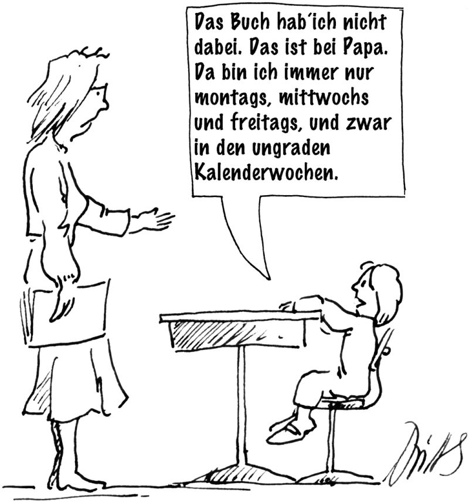

Endlich ist es soweit! Wir sind in der Grundschule. Die große Begrüßungsfeier für Schüler und Eltern ist vorbei, und die Kinder haben die Aula verlassen. Schweren Herzens haben sich einige Eltern von ihren Kindern getrennt und sie nun der Schule, d.h. der sympathischen Klassenlehrerin Anna Nass, überlassen. Mit ihren riesigen Schultüten, die fast größer sind als sie selbst, sitzen Kevin und Chantal, aber auch Alexander und Charlotte erwartungsvoll auf ihren kleinen Stühlen an den niedrigen Tischen.
Aus den Kindern sind jetzt Schüler geworden, und zwar die Klasse 1b. Aber das ist nicht alles, denn sie sind auch die „Giraffenklasse“ und haben als Maskottchen eine Stoffgiraffe, die auf dem Lehrertisch steht und bei Bedarf herangezogen wird. Die Parallelklasse ist zwar die noch attraktivere Tigerklasse, aber eine Giraffe ist ja auch ganz lustig. Wie die gesamte Schule ist der Klassenraum in den Sommerferien gründlich gereinigt worden und riecht noch nach Putzmitteln und einem Hauch von Zitrone. Nachdem die Spiele vorbei sind, die das gegenseitige Kennenlernen fördern sollen, beginnen die ersten richtigen Schulstunden.
1. Einschulung und Sitzordnung
Schon zu diesem Zeitpunkt tritt unter Umständen ein Problem auf, das jetzt (oder später) durchaus juristische Aspekte aufweist. Es geht um die Sitzordnung innerhalb der Klasse. Viele Klassenlehrerinnen überlassen ihren Schülern die Platzwahl, wodurch sich natürlich befreundete Schüler nebeneinander setzen. Auch von den Eltern wird dies häufig gewünscht. So haben Kevins Eltern bei der Schulanmeldung ausdrücklich darauf hingewiesen, ihr Sohn solle unbedingt neben Marvin sitzen, da er mit ihm befreundet sei.
Darauf kann man natürlich eingehen, damit die Kinder sich in den ersten Tagen und Wochen nicht verloren vorkommen. Aber wer ein bisschen in die Zukunft schauen kann, der erahnt vielleicht die Schwierigkeiten, die sich später daraus ergeben können. Denn wie heißt es doch so schön: „Gleich und gleich gesellt sich gern.“ Die Platzwahl nach Freundschaften wird dann zu einem Problem, wenn es sich um unruhige Schüler handelt, die sich gegenseitig und noch lieber andere stören.
Obwohl ich später noch ausführlich darauf eingehe ( , S. 84), sei hier schon aus einer Gerichtsentscheidung wiedergegeben:
Die Sitzordnung richtet sich nicht nach den Wünschen der Schüler, sondern nach den Anforderungen des Unterrichts.
Ohne Ihnen vorschreiben zu wollen, wie Sie Ihre Schüler setzen, möchte ich zwei andere Modelle vorstellen: Einmal gibt es die Möglichkeit, die Schüler in alphabetischer Reihenfolge zu setzen. Dieses sehr formale Kriterium erleichtert Organisatorisches und bewirkt zugleich eine zufällige Durchmischung der Klasse. Auch Außenseiter, neben denen sonst vielleicht niemand sitzen will, werden so auf einfache Weise integriert.
Die zweite Möglichkeit besteht darin, Jungen und Mädchen immer abwechselnd zu setzen. Dieses Verfahren beugt einer Zweiteilung der Klasse in Jungen und Mädchen vor und unterstützt somit die Koedukation. Wie gesagt, Sie brauchen keine dieser Varianten zu wählen und können ganz anders entscheiden, aber Sie sollten wissen, dass es auch andere Möglichkeiten als die freie Platzwahl gibt. Zudem macht die Zuordnung der Plätze durch die Schule bzw. die Lehrerin von Anfang an deutlich, wer die wichtigen Entscheidungen fällt.
Das nächste Problem taucht besonders bei jüngeren Schülern auf, weshalb es gleich hier behandelt wird: Es geht um den Toilettengang. Je jünger die Schüler sind, desto schwerer fällt es ihnen, notwendige Dinge einzuplanen.